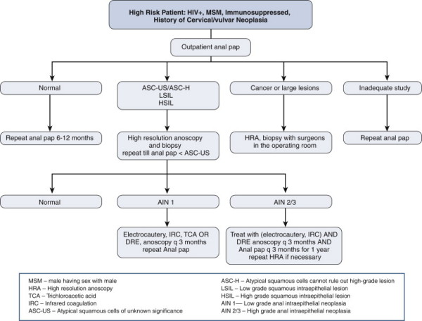

Anal Canal Tumours
DEFINITION
Tumours of the anal canal, encompassing noninvasive lesions, anal
intra-epithelial neoplasia and invasive cancers.
Anal canal tumors arise from mucosa of the anus
- in contrast to anal margin tumours, which arise at skin distal to
the mucocutaneous junction and extending to 5-6cm radially.
AJCC definition:
"Anus begins where the rectum enters the puborectalis sling at the
apex of the anal sphincter complex (palpable as the anorectal ring)
and ends at the squamous mucosa blending with the perianal skin."
D E A B M I M
EPIDEMIOLOGY
See individual conditions
Anal SCC is a relatively uncommon disease
- accounts for only 2% of colorectal malignancies
- but currently increasing.
Risk factors for AIN and
SCC:
- HPV infection
- anal warts
- multiple sexual partners
- anal receptive intercourse; MSM
- cervical dysplasia / cancer
- immunosuppression
- HIV infection.
D E A B M I M
AETIOLOGY
Non-Invasive
Condylomata Acuminatum (anal warts)
Anal intraepithelial neoplasia (AIN)
Paget disease
Invasive
SCC
AdenoCa
Melanoma
Minor others:
- anorectal lymphoma
- carcinoids
- GI stromal tumours
80% of anal cancer are SCC
10% are adenoCa
10% other
D E A B M I M
BIOLOGICAL BEHAVIOUR
Anatomy
See notes
Lymph drainage
- prox to dentate line --> superior rectal artery, within
mesorectum, to IMA node chain; occasionally laterally to internal
iliac nodes
- below dentate --> inguinal and femoral nodes, occasionally to
superior rectal and on.
Non-Invasive
Lesions
Anal
Warts / Condylomata Acuminatum
See notes
Anal
Intraepithelial Neoplasia (AIN)
Precursor to invasive SCC.
AKA carcinoma in situ (CIS), anal dysplasia, anal squamous
intraepithelial lesion (SIL), Bowen's disease
Graded I,II,III for mild, moderate and high
grade dysplasia
- corresponding to histologic findings, including cytologic changes,
mitotic activity, nuclear membrane changes and abnormalities in
maturation / differentiation.
- depth of invasion.
- "Bowens" often used for red, thickened or eczematous skin, ~grade
III but no clear definition so this term is best avoided
- also called high-grade anal intraepithelial neoplasia (HGAIN;
grade III) and low-grade (LGAIN; grades I-II)
HPV strongly correlated; esp. types 16, 18
Affects perianal skin and anal canal, including anal transition
zone.
- may cause macroscopic lesions, such as warts, tumours, ulcers or
eczematous plaques.
- alternatively, microscopic changes in grossly normal epithelium.
- and patient may be asymptomatic.
- tends to be multifocal.
Most cases of SCC are preceded by AIN
Paget
Disease
Very uncommon.
Intraepithelial adenoCa, probably from apocrine glands.
Large vacuolated cells with clear, pale cytoplasm and hyperchromatic
nuclei.
Presents as erythematous or eczematous area of epithelium around
anus.
Half associated with synchronous internal malignancy, often
colorectal AdenoCa, may or may not be contiguous.
Anal
SCC
Classification
Key point is whether it is within
canal or on perianal skin.
- perianal skin = much less common and less agressive.
- same behavior to other skin SCC and same treatment with good
prognosis.
But if at or near anal verge, or into canal at all, then they are
best classified as anal canal lesions
Numerous histologic subtypes; transitional, basaloid, cloacogenic,
large-cell keratinizing
--> but no significance for management.
AdenoCa
Sam as for rectal adenoCa; incl. treat with APR unless tiny
- with or without neoadjuvant therapy.
Melanoma
Anal melanoma may have an unusual appearance; may lack pigment
May not look malignant.
D E A B M I M
MANIFESTATIONS
Symptoms
Local
Non-specific
Bleeding, pain, sensation of a lump.
May be just itching, burning
Possibly discharge.
Frequently asymptomatic and incidentally discovered
Metastatic
Groin lumps
Misdiagnosis
Frequent.
Lesions are often mistakenly attributed to other benign anorectal
pathologies like haemorrhoids (70-80% of the time).
History
Focused history on risk factors necessary
- infection with HPV, HIV
- other HPV-related malignancies e.g. cervical cancer, CIN, vulvar
cancers
- sexual history, anoreceptive intercourse, MSM,
- solid organ transplant and immunosuppression
- smoking.
Signs
Observe
Non-specific also
Flat or raised
Verrucous, erythematous or scaly
Ulcer may be present, esp if malignant.
Other anorectal pathology may coexist, confusing the picture.
4-part examination
1. Careful anal inspection with good lighting
2. DRE
3. Proctoscopy / anoscopy
4. Flexible Sigmoidoscopy
SCC
Physical exam, careful attention to anal region and inguinal and
femoral nodes
- ?tumour fixation and sphincter invasion.
- note adenopathy could also be within the mesorectum; perirectal
nodes may be palpable
Anoscopy and tumour biopsy.
Presentation
50% present with localized disease
- one-third with regional nodal disease
- 10-15% with distant mets
D E A B M I M
INVESTIGATIONS
Histo
All lesions need biopsy
May need EUA to achieve this.
Anal pap (see below for
role)
Endoscopy
All need colonoscopy to rule out synchronous lesions; significant
lesions demonstrated in 15%
Imaging
All cancers need radiological evaluation
- chest, abdo, pelvis CT for lymphadenopathy
- inguinal node abnormalities may warrant biopsy; exclude lung,
liver mets.
- low threshold for brain imaging if any clinical suspicion; often
go to brain.
EUS/MRI
Used to assess primary lesion in all cases.
Tumour depth, sphincter involvement, peri-rectal nodes
- these two methods are comparable.

Staging
Focused on primary lesion size, existence of local invasion, and
presence or absence of regional nodal disease.
Tis = Carcinoma in-situ
T1 = tumour <2cm
T2 = >2 but <5 cm
T3 = 5cm+
T4 = invading other organs including urethra, vagina, bladder
N0 = no nodes
N1 = perirectal nodes
N2 = internal iliac and/or inguinal (groin) nodes involved on one
side
N3 = perirectal and inguinal and/or internal iliac on both sides
M0
M1
Stage
I = T1,N0,M0
II = T2/3,N0,M0
IIIA = T4,N0,M0 or T1-3,N1,M0
IIIB = T4,N1,M0 or T1-3, N2/3,M0
IV = M1
D E A B M I M
MANAGEMENT
AIN
No consensus on best therapy.
1. Logical that eradication will
prevent progression, as is case with cervical dysplasia.
But difficult to detect and clear
- excision and ablation associated with high morbidity,
including pain, stricture, incontinence and slow healing.
- part of the problem is that it is a field change, so unsurprising
that eradication failure rate is very high
- recurrence rate high despite negative margins.
- positive resection margins also common, despite careful mapping
2. Natural history and malignant
potential are uncertain
- probably low risk of Ca progression.
- much less dangerous than cervical dysplasia.
- probably 5-10% progression risk in immunocompetent (50% in HIV
+ve)
- once established, it probably never regresses
- unclear if detection and
eradication decreases risk or improves survival.
--> also worth remembering that
even when SCC appears, chemo rads often curative without
colostomy.
... except in HIV, when it is a much more serious problem.
And must refer to gynaecologist for smears to monitor for CIN
3. Options: aggressive approach to
watchful waiting
i) Anal pap smears correlate
poorly with final histology (sensitivity 70-90%; specificity
30-60%).
- weak supporting evidence but still recommended in high-risk patients
--> if positive, patient should undergo careful physical exam,
including anoscopy.
--> note high false-negative rate in HIV pts
ii) For established AIN, mapping by frozen section with biopsies and
WLE of macro and micro abN
is the most aggressive treatment
- but can lead to large open wounds requiring skin grafts, or flap
closures, so is best avoided.
iii) High-res anoscopy
(done either in an office or operating room)
- anus and perineum swabbed with 3-5% acetic acid, and area examined
with a 10-pwer mag. e.g colposcope
--> abN areas turn aceto white with TCA 3-5%, suggestive (but not
diagnostic) of AIN (stains abnormal epithelium white)
- Lugo iodine can also be used; mature squam epithelium stains deep
brown vs light yellow of aceto-white areas.
--> those areas can then be biopsied, excised or destroyed by
cautery, coagulation, cryotherapy or TCA.
---> targeted therapy that minimizes damage to surrounding normal
tissue.
This approach may minimize progression to Ca, but inconvenient and
time consuming
- and no evidence that it prolongs survival.
iv) Periodic courses of imiquimod
5-FU have also been used.
v) Most conservative = close
clinical follow-up alone
- i.e. period physical exams and biopsy or excision of lesions when
they appear
- biopsy suspicious macroscopic lesions as they appear
- be especially attentive in the immunocompromised and MSM.
--> If invasive SCC, treat as below.
Practice Parameters
Recommendations:
1. Be attentive but conservative.
- observation alone with close clinical follow up appropriate in
select cases of all grades of AIN
--> do this 6monthyl for Low grade
2. Topical 5% imiquimod with close long-term follow up is
appropriate therapy for lesions of all grades
- immune response modifier with anti-HPV and anti-tumour
effect.
- especially for larger concerning lesions with thickened
epithelium.
- complete response in up to 50%
- side effects include irradiation, burning and erosions; may
adversely affect compliance.
3. Topical 5FU with close long term follow-up is also appropriate
- treatment periods from 9-16w
- response in up to 90%; recurrence in up to 50% with side effects
in most (80-90%)
4. Photodynamic therapy also used; weaker evidence.
5. Targeted destruction and close follow-up is also effective
- more difficult, requires WLE guided by froze section; 1cm margins,
local flaps
- high complication rates (including stenosis and incontinence)
Bottom Line
1. Low grade: watchful waiting, 6m pap smears
2. High grade: treat more aggressively.
Paget
Disease
Colonoscopy to exclude concurrent Ca
If no invasive Ca, treatment is wide local excision.
- preop biopsies and field mapping are important, or at least
intra-op frozen sections.
- because Paget's cells may extend beyond gross margins.
After excision, primary closure for small lesions; skin grafting or
flap closure for larger resections.
May be multifocal; local recurrence in 20%, even with -ve margins.
- so follow-up.
If invasive cancer --> treat as for invasive rectal adenoCa
Anal
SCC
Local excision is usually inadequate unless tiny
- ie ok only in small superficial lesions outside of anal canal, at
anal margin
--> if close margins <1mm, residual microscopic disease, can
give additional low-dose reduced-volume CRT.
Chemoradiation with surgery is as
good as chemo-radiation alone (Nigro et al).
- surgery also risks sphincter damage, colostomy, and delays
initiation of chemo-radiation.
- addition of chemo to radio helps lower treatment failure, reduce
local recurrence and reduce need for colostomy.
--> chemorad has replaced APR as preferred treatment; better
morbidity and survival.
--> combined CRT should be
primary treatment for most SCC of the anal canal (grade 1A
evidence)
Staging
As above, do chest abdo pelvis CT
EUS / MRI
Consider PET if lesions of uncertain significance
Prognosis correlates with size of primary and presence of absence of
lymph
- but ultimately, treatment is pretty much always the same,
chemo-radiation.
Chemorad Regimen
Mitomycin-c and 5-FU (multidrug chemo most effective; supported by
Grade IA evidence)
Concomitant radiation to primary and nodes, including groin.
- if groin nodes involved (PET or needle biopsy), booster dose of
rads at that site.
- inguinal dissection should be avoided as chemorad is sufficient
and less morbidity (wound healing, oedema).
When tolerated, continuous higher dose radiation is preferable
Side-effects can be problematic in 50% with significant skin
irritation
- high-dose rads tailored to tumors to minimize side effects
--> 'Intensity-modulated
chemoradiotherapy' adjusts dose to tumor to minimize side effects;
not well established at present.
Outcome
Chemorad effective - 70-100% complete tumour response
- and 5-yr survival 65-95%
- also first line for epidermoid tumours of the anal canal
But complicated by hematologic toxicity, perineal desquamation,
diarrhoea, tenesmus, anal pain.
- worse in HIV, though outcomes same.
Recurrence
Salvage APR if recurs.
- high
Small incidental SCC in a
haemorrhoid?
Choice is to accept excision, or chemorad
- resection often at uncertain orientation and
margins may be inadequate.
- standard chemorad often best option.
Sentinel Node Biopsy
Technically feasible but still investigational.
Role not established in clinical practice.
Follow-up
Periodic physical exams including DRE, anoscopy and inguinal node
assessment.
- every 3m for 1 year
- every 6m for 2nd year
- and yearly out to 5 years.
* Tumour may take a long time to regress; wait 12 weeks before
reassessing.
If continued tumour, but ongoing regression:
--> repeat exam and biopsy at 4-6 week intervals while following
--> If tumour stops shrinking or starts to regrow, proceed to APR
Random biopsies of normal tissue are not helpful.
EAUS is better than physical exam for detecting recurrent disease;
3D evaluation more sensitive than traditional 2D EAUS.
Some practice routine EAUS at follow up and periodic MRI screening
for recurrence in at-risk.
Recurrent or persistent disease
If residual or recurrent disease after 12w (~20-30% of
patients), consider APR (strong grade 1B evidence for
effectiveness)
- failure predicted by T, N stage, HIV status and inability to
complete CRT
- persistent disease present within 6m of completing CRT is
associated with a poorer prognosis than recurrence.
40-50% successful salvage, but appreciable morbidity, esp. wrt wound
healing.
and 5y survival 30-50%
--> us. best to do simultaneous flap closure of perineum
(gracilis, rectus abdominus, etc); high breakdown risk.
If groin node recurrence without other disease (rare), then consider
inguinal dissection at high complication risk.
If extrapelvic metastastic disease, chemotherapy is helpful
(response up to 66%; median survival 35m)
Sometimes AIN only after rads; then can monitor.
Management of Inguinal Node Disease
Chemoradiation is the treatment of choice.
Complete response in 80-90%
Boost technique into radiation field for this.
Metachronous nodes (developing within 6m usually) are treated in
same way (seen in 10-20% of pts)
Elective prophylactic lymphadenectomy unwarranted; high wound and
complication rates
HIV pts
Can use CD4 count to predict outcome and toleraance of CRT.
- if count >200 can treat in same way as non-HIV
- Individualised therapy if <200
Anal Margin Disease
Essentially a skin malignancy; treat as for SCC elsewhere.
- appropriate excision to 1cm margins; APR for large lesions /
multiple recurrence.
Do full anal exam; TNM different (e.g. N0,N1 only)
Generally prognosis is worse than for anal SCC; lower overall and
colostomy-free survival.
Peri-anal skin / margin tumours
T1 = workup, excise with a 1cm margin
T2-4 = chemo-radiation with rads also delivered to the inguinal and
pelvic nodal beds
(staging same as for anal canal lesions).
HPV
Vaccine Note
Protect against HPV 16 and 18, which cause anogenital cancer
90% of warts associated with strains 6 and 11
Gardasil approved for girls 9-26, and for boys to prevent warts.
- Studies underway to look at broad HPV coverage and role in
anogenital cancers other than cervical.
Currently recommended for the at-risk
- including MSM and HIV+ve
Therapeutic vaccines are experimental
- safe, well tolerated, increase immune activation but therapeutic
efficacy currently unclear.
Melanoma
Surgery is required, prognosis is poor regardless of what is done
- 30% 5-year survival for those undergoing curative resection, both
APR and local.
WLE with negative margins preferable.
- APR if too large for local excision and no distant mets
Benefit of adjuvant Rx uncertain
Lymphoma
Chemoradiation.
Most other minor tumours treated by local or radical resection
depending on size
D E A B M I M
REFERENCES
Cameron 10th